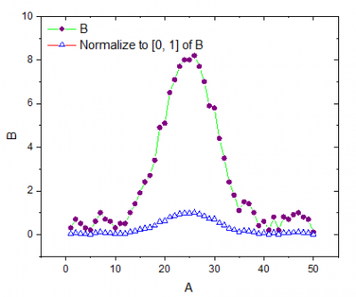

Es gibt zwei Hilfsmittel der Bedienoberfläche zum Normieren von Daten: eines für Arbeitsblattdaten und eines für gezeichnete Daten. Die Ausgabe von beiden ist ähnlich, und sie werden beide in diesem Kapitel erläutert. Für spezielle Informationen ziehen Sie die Referenzseiten für diese zwei X-Funktionen zurate:
oder
| Neu berechnen |
Bedienelemente zur Neuberechnung der Analyseergebnisse
Weitere Informationen finden Sie unter Analyseergebnisse neu berechnen. |
|---|---|
| Eingabe |
Definieren Sie Ihre Eingabedaten.
Hilfe zum Festlegen von Bereichen finden Sie hier: Eingabedaten festlegen |
| Eingabe als einen zusammengesetzten Datensatz behandeln |
Legen Sie fest, ob alle Eingabedatensätze als ein zusammengesetzter Datensatz behandelt werden sollen. Diese Option ist nicht verfügbar, wenn für Normierungsmethoden die Option Geteilt durch einen festgelegten Wert, Geteilt durch Referenzzelle und Auf den aus dem Diagramm ausgewählten Punkt normieren gewählt ist.
Wenn Sie zum Beispiel zwei Spalten (Spalte A und B) als Eingabedatensätze auswählen können und hoffen, die Daten durch den maximalen Wert zu teilen. |
| Normierungsmethoden |
|
| Benutzerdefinierter Wert |
Geben Sie einen Wert ein. Verwenden Sie diese Option, wenn Normierungsmethoden = Geteilt durch einen festgelegten Wert. |
| v1, v2 |
Verfügbar, wenn Normierungsmethoden = Normieren auf [v1, v2]. Definieren Sie einen Wertebereich, einschließlich v1 und v2. |
| Referenzspalte/Referenzdiagramm |
Benennen Sie eine Arbeitsblattspalte oder ein Referenzdiagramm. |
| Normieren auf |
Diese Option wird verwendet, wenn Normierungsmethoden = Referenzspalte verwenden oder Referenzdiagramm verwenden:
Weitere Informationen zu den Methoden finden Sie im Abschnitt Algorithmus unten. |
| Referenzzelle |
Die Arbeitsblattspalte wird durch den Zellenwert geteilt. |
| Punkt auswählen |
Startet das Hilfsmittel Datenkoordinaten zum Auswählen eines Punkts auf einer Kurve. |
| X-Wert des ausgewählten Punkts |
X-Wert des mit dem Hilfsmittel Datenkoordinaten ausgewählten Punkts |
| Y-Wert des ausgewählten Punkts |
Y-Wert des mit dem Hilfsmittel Datenkoordinaten ausgewählten Punkts |
| Index des ausgewählten Punkts |
Zeilenindexnummer des mit dem Hilfsmittel Datenkoordinaten ausgewählten Punkts |
| Ausgabe |
Direkte Ausgabe der Ergebnisse Hilfe zum Festlegen der Bereiche finden Sie unter: Ergebnisse ausgeben |
Einzelheiten zum Algorithmus finden Sie in der Dokumentation zur den jeweiligen X-Funktionen in der Origin-Hilfe der X-Funktionen: